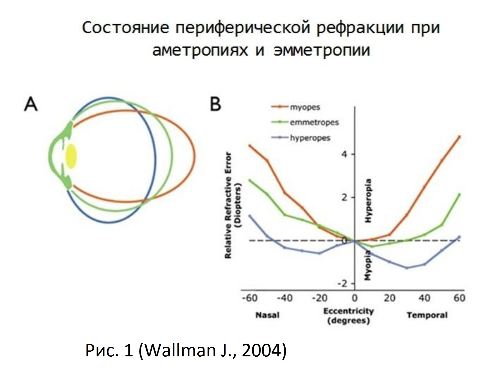
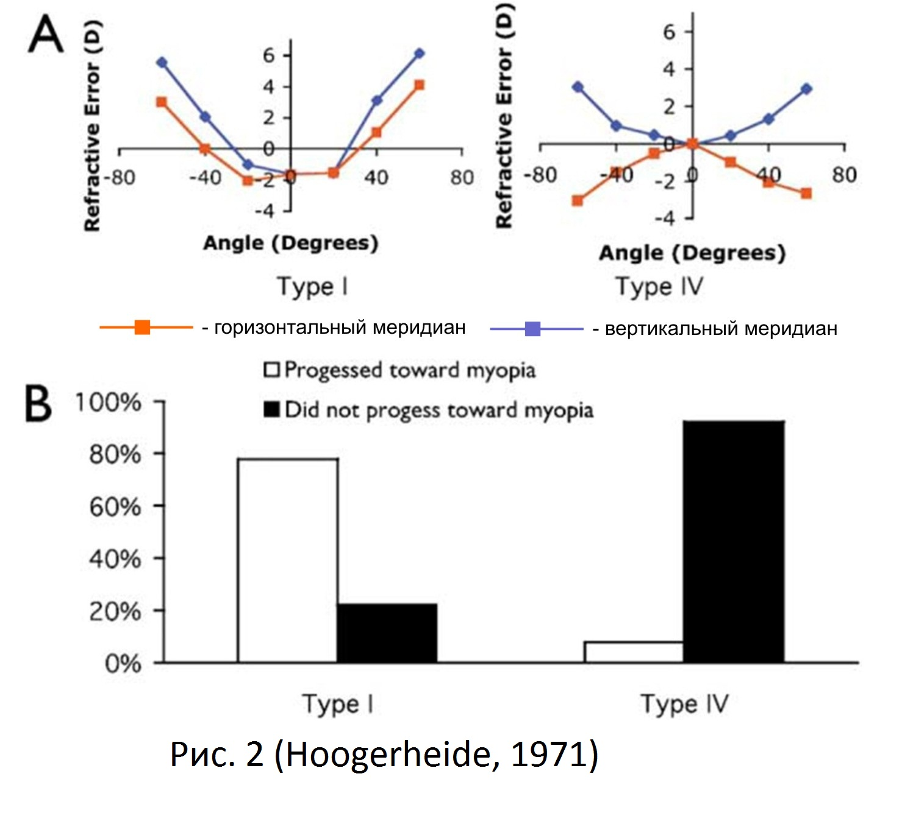
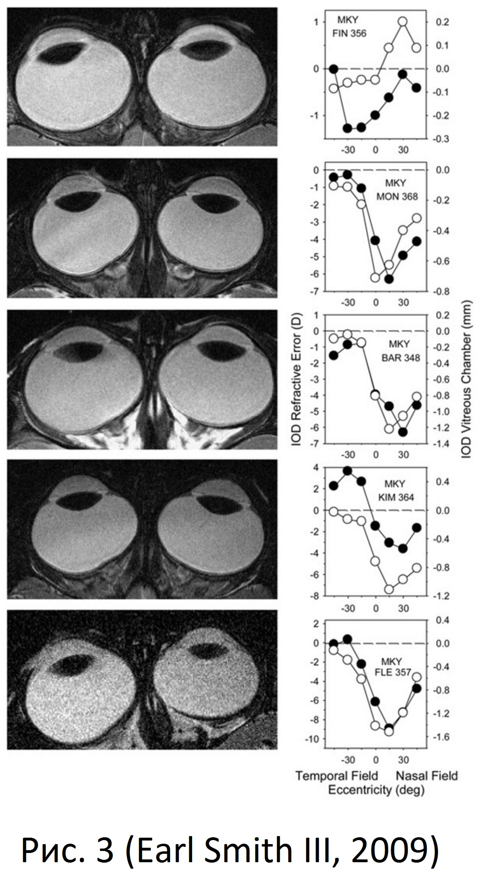
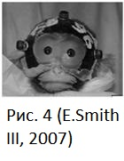
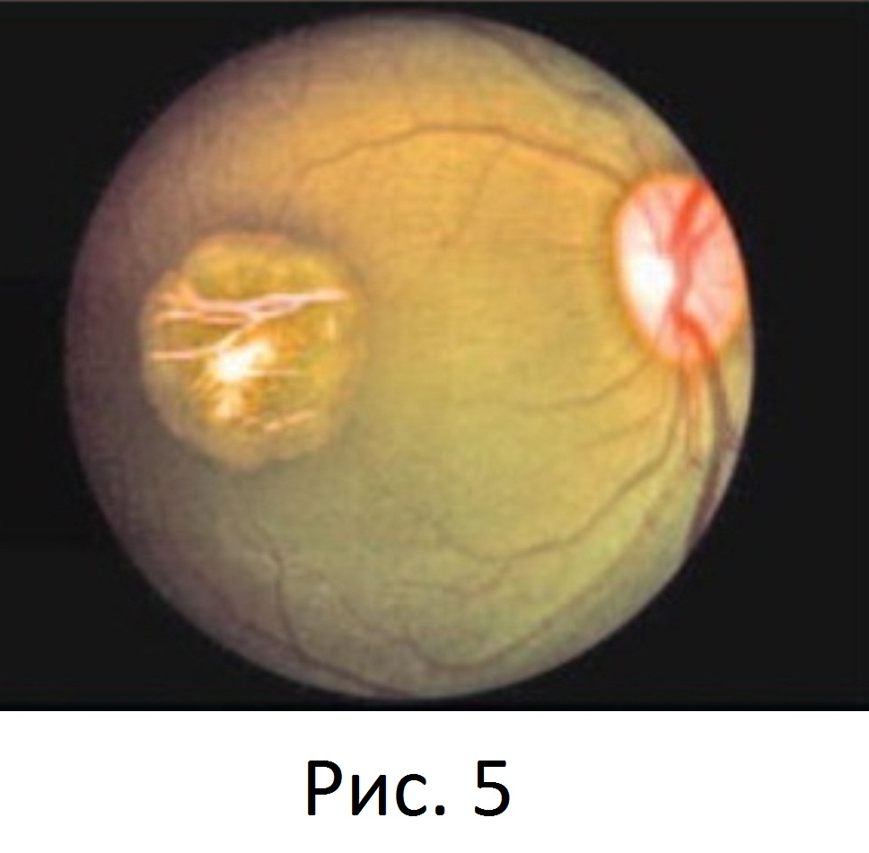
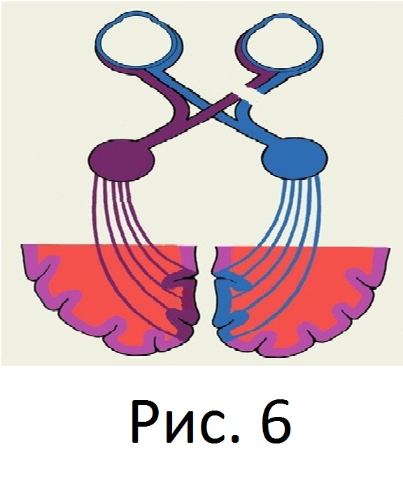
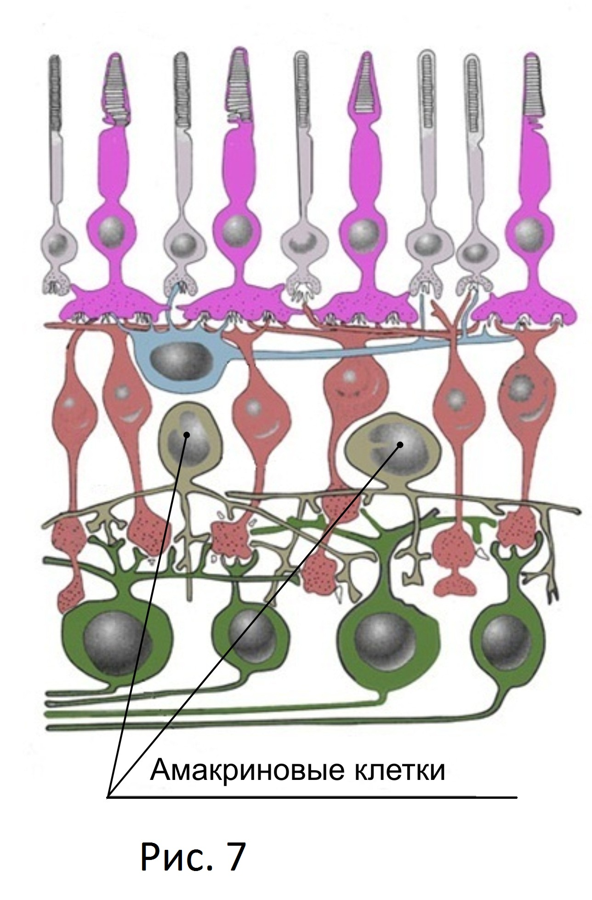

Теоретические предпосылки
Периферическое преломление и рефрактогенез.
Изучение состояния периферического преломления в оптической системе глаза и вероятность его влияния на рефрактогенез проводится с 30-х годов прошлого столетия, когда впервые были опубликованы данные об относительно более гиперметропичной периферии в близоруких глазах в сравнении с эмметропическими (Ferree C.E. et al., 1931).
В последующем, в многочисленных исследованиях разных авторов было отмечено, что показатели периферической рефракции начиная с 10-15º от фовеа имеют закономерные разнонаправленные отличия относительно центральной рефракции при разных видах аметропий, а также в сравнении с эмметропией. Так, при миопии на периферии отмечается значительная относительная дальнозоркость, а при гиперметропии на периферии имеет место заметная относительная близорукость, в сравнении с центральной рефракцией (Рис. 1). В свою очередь, при эмметропии различия между центральной и периферической рефракцией малозначительны.

Интерес к изучению влияния состояния периферического преломления глаза на рефрактогенез значительно усилили результаты, полученные Хугерхайдом с соавторами в 1971 году при исследовании периферической рефракции у курсантов пилотов с последующим наблюдением за их центральной рефракцией. В работе было выявлено, что у пилотов эмметропов с относительно гиперметропической периферией глаза повышенный риск развития близорукости (Hoogerheide, J. et al., 1971). Так, согласно результатам исследования показано, что у 77% наблюдаемых эмметропов с исходной относительной периферической гиперметропией со временем развилась близорукость, в отличие от группы эмметропов без относительной гиперметропии на периферии, где близорукими за тот же период наблюдения стали лишь 6% (Рис. 2). По мнению автора, полученные данные свидетельствуют, что периферическая визуальная ошибка влияет на гомеостатические механизмы управления ростом глаза.

В дальнейшем, многочисленные исследования, проведенные на землеройках (Sherman et al., 1977г.), мармозетках (Troilo and Judge, 1993г.), цыплятах (Wallman et al., 1978г.), резус-макаках (Wiesel and Raviola, 1977г.), мышах (Schaeffel et al 2004г.) и на других животных, наглядно показали, что формирование периферического дефокуса на сетчатке влияет на рефрактогенез глаза. Так, в одном из исследований проведенном на обезьянах, сформированный гиперметропический дефокус на периферии сетчатки в одной из половин глаза вызвал рост этой половины глаза (Smith EL, III, et al.,2009) (Рис. 3). Контроль рефракции и МРТ производившиеся на протяжении нескольких месяцев эксперимента показали, что меняется не только размер половины глаза с соответствующим усилением рефракции и увеличением объема задней камеры глаза, но и отмечена миопизация центральной рефракции.

Исследования, проведенные в модельных экспериментах на животных, подтвердили доминирующую роль периферии сетчатки в процессе рефрактогенеза. Так, в одном из исследований, детенышы обезьян носили в течение 150 дней дифузоры с отверстиями 4 и 8 мм., лишающие периферию сетчатки форменного зрение от 16 градусов относительно фовеа (Smith, Ки, Ramamirtham, Цяо-Grider, и Хунг, 2005) (Рис. 4).

В процессе наблюдения за обезьянами проводилась рефрактометрия и ультразвуковое исследование по результатам которых, выявлено постепенное развитие осевой близорукости во всех случаях. После прекращения ношения дифузоров всем обезьянам на один глаз произведена фотоабляция фовеа. Последующее наблюдение в течение 4-5 месяцем показало обратное изменение рефракции с восстановлением эмметропии в каждом глазу включая глаза с фотоабляцией фовеа. Результаты другого исследования этих же авторов показали, что ношение детенышами обезьян отрицательных линз после фотоабляции фовеа (Рис. 5), так же приводит к развивитию миопии (Smith et al., 2007, 2011). Результаты этих исследований, согласно выводам авторов, позволяют предположить, что процесс эмметропизации контролируется в первую очередь состоянием визуального сизнала от периферии сетчатки, а сигналы центральной сетчатки не оказывают существенный вклад в механизмы изменения формы глаза, которые возникают в ходе развития осевой миопии.

В процессе изучения роли периферии сетчатки на формирование осевой рефракции глаза получены данные, позволяющие исключить влияние центральных отделов зрительного анализатора посредством обратной связи на рефрактогенез. Так, в модельном эксперименте с перерезанием зрительного нерва у цыплят в неонатальном периоде на фоне ношения окклюдора на одном глазу, ограничивающего поступление светового сигнала на одну половину сетчатки, рефрактометрически выявлена секторальная миопии, сопровождающаяся увеличением витриальной камеры на стороне воздействия окклюзии (Troilo D. et al., 1987). Также, изменение осевой рефракции обнаружено у цыплят носивших минусовые линзы после одновременного оперативного нарушения проводимости по зрительному и цилиарному нерву (Рис. 6), где по данным рефрактометрии и УЗИ отмечено утончение хрусталика, уменьшение глубины витриальной камеры, утолщения сосудистой и формирование гиперметропии (Wildsoet, 2003).

Авторы полагают, что процессы рефрактогенеза регулируются на уровне периферии сетчатки и не контролируются центральными отделами зрительного анализатора. Значительным событием в изучении состояния периферического преломления и его роли в рефрактогенезе явился аналитический труд американского ученого Джоша Уоллмана. Обобщив результаты собственных исследований и накопленные многолетние данные, полученные другими авторами в модельных экспериментах на животных и клинических исследованиях у людей, Уоллман сформулировал гипотезу о гомеостатических механизмах управления ростом глаза, где основная роль отводится состоянию периферического преломления глаза. Автор гипотезы свидетельствует, что формирование миопического или гиперметропического дефокуса на периферии сетчатки вызывает разнонаправленный каскад биохимических процессов в сетчатке, сосудистой глаза и склере, что создает предпосылки к формированию различных видов рефракции. (Wallman J., Winawer J., 2004г.).

В гипотезе представлены доказательства, того, что генератором потенциала действия являются амакриновые клетки (АК) сетчатки (Рис. 7), которые проявляют различную реактивность на миопический и гиперметропический дефокус. АК напрямую и опосредованно воздействуют на баланс нейромедиаторов и нейротрансмиттеров (ГАМК, глюкагона, закиси азота, VIP-нейропептида, ретиноиевой кислоты и др.) в сетчатке, которые, в свою очередь, влияют на обменные процессы в сосудистой оболочке и склере, и тем самым влияют на рост глаза.
На сегодняшний день известно, что АК контролируют ряд важнейших биохимических и функциональных процессов в сетчатке, так, АК различных типов обслуживают все нейромедиаторные процессы во внутреннем сетчатом слое (Максимова Е.М., 1990г.), посредством тормозного медиатора холитнэргических АК гамма-аминомасляной кислоты (ГАМК) обеспечивается обратная связь от горизонтальных клеток к фоторецепторам, за счет чего, организована оппонентная центру периферия рецептивных полей биполяров и, отчасти, ганглиозных клеток (Бызов А.Л. 1987г.). Считается, что АК посредством ГАМК создают on-off равновесие между центральными и периферическими отделами сетчатки. АК играют ведущую роль в функциональных процессах сетчатки отвечая за дивергенцию и конвергенцию сигналов от палочек и палочковых биполяров, тем самыи поддерживая их связь с ганглиозными клетками (Kolb N., 1979, Famiglietti E.V., 1974), обеспечивая связь палочковых путей колбочковыми путями, за счет чего палочковые сигналы могут использовать пути колбочковых биполяров к ганглиозным клеткам (Strettoi E. at. tl. 1992), также АК способны влиять на on-off ответ колбочковых биполяров (Kolb N., 1993).
Таким образом, разнонаправленная реакция АК на миопический и гиперметропический дефокус, проявляющаяся в различной нейромедиаторной реактивности и функциональной настоенности сетчатки, при подавляющем представительстве амакриновых клеток на периферии сетчатки (Рис. 8) может свидетельствовать о ключевой роли периферического дефокуса в процессах гомеостаза и рефрактогенеза.
Клиническими исследованиями, проведенными в различных возрастных группах, многими авторами удалось подтвердить факт того, что относительная периферическая дальнозоркость является устойчивым фактором риска для развития близорукости (D. Mutti et al., 2000 г., Stone RA, Flitcroft DI, 2004г., Atchison DA, Jones CE, Schmid KL, et al., 2004г., Kee C.S., et al.,2005г., Smith EL, III, Ramamirtham R, Qiao-Grider Y, et al., 2007г.). Так, в одном из исследований периферической рефракции проведенной у большой группы детей с последующим их многолетним наблюдением выявлено, что за 2 – 4 года до появления центральной миопической рефракции и её клинических проявлений, у детей отмечается заметная относительная периферическая гиперметропия (D. Mutti et al., 2000 г.). Основываясь на полученные данные, автор предлагает формировать достоверные группы риска по близорукости на доклиническом уровне проявления аномалии рефракции для своевременного принятия профилактических мер. Так же, автор полагает, что результаты этих исследований наглядно показывают, что относительная периферическая гиперметропия не следствие удлинения глаза, а проявление формы заднего отрезка глазного яблока, предрасполагающего к его удлинению, являясь причиной роста глаза.
Изучение особенностей форм глаза по данным периферической рефрактометрии при миопии и эмметропии позволило выявить закономерные отличия. Так, результаты исследования периферической рефракции у группы близоруких и эмметропов в 10, 20 и 30 градусах от фовеа в вертикальном, горизонтальном и косых меридианах показали, что близорукий глаз стремится к форме эллипсоида, в отличие от глаз с эмметропией, имеющих более шаровидную форму (Ehsaei A , Mallen EA , Chisholm CM , Pacey IE., 2011г.). В свою очередь, исследование состояние периферического преломления в различных меридианах при близорукости позволило выявить более значимые изменения периферического преломления по горизонтали, чем по вертикали (Seidemann A, Schaeffel F, et al 2002г.). В большинстве случаев у близоруких и эмметропов периферическая рефракция в вертикальном меридиане является относительно близорукой (Donald O. Mutti., et al 2011г.). Относительно близорукий сдвиг периферической рефракции при эмметропии и относительное смещение рефракции в сторону гиперметропии при близорукости, характерно только для горизонтального меридиана и не проявляется по вертикали (Atchison, DA, Pritchard, N., & Schmid, KL., 2006г.). По мнению авторов, полученные результаты свидетельствуют о разнонаправленной силе периферического преломления в горизонтальном и вертикальном меридианах при близорукости, что коррелируют с данными о форме глаза, и свидетельствует о большем растяжении близорукого глаза по оси, менее по вертикали и меньше всего по горизонтали. Это подтверждают математические расчеты, произведенные по данным поперечно осевых и сагиттальных изображений, полученных при магнитно-резонансной томографии у близоруких и эмметропов, которые показали отличия эллипсоидной формы глаз (Atchison DA, Pritchard N, Schmid KL, et al. 2005г.). Так, формы сплюснутых, крутых к экватору эллипсоидов, где осевые размеры меньше, чем вертикальные и горизонтальные, характерны для большинства эмметропичных глаз. Близорукий эллипсоид характеризуется большим осевым размером, чем вертикальным, который, в свою очередь, больше чем горизонтальный размер с приблизительным соотношением 3:02:01. Таким образом, форма эллипсоида при близорукости более плоская к экватору и менее сплюснута. Это открытие, утверждает автор, может иметь отношение к теории о причастности периферической сетчатки к развитию близорукости.
Исследования состояния периферического преломления на протяжении одного меридиана позволили выявить асимметрию показателей в носовой и височной половинах глаза при близорукости. Так, изучение состояния периферического преломления у близоруких мармозеток показало, что с носовой стороны преломление относительно более гиперметропично, чем с височной (Kristen Totonelly, 2010), что согласно показаниям УЗИ и МРТ, коррелирует с глубиной камеры стекловидного тела. Также, автором отмечено, что степень относительной дальнозоркости в носовой периферии обратно пропорциональна степени близорукости (р. <0,01). В другом исследовании (Ehsaei A , Mallen EA , Chisholm CM , Pacey IE., 2011г.), где вдоль всех измеряемых меридианов, в близоруких глазах, выявлена относительная гиперметропия на периферии, с наименьшим её проявлением в верхней – темпоральной части сетчатки, хотя эмметропичный глаз проявлял относительно постоянное преломление на периферии во всех меридианах, что, по мнению автора, подтверждает наличие сферической формы сетчатки у эмметропов.
При исследовании состояния периферического преломления в процессе аккомодации при работе вблизи у миопов и эмметропов выявлена тенденция увеличения относительной периферической дальнозоркости в наименее близоруких меридианах в обеих группах, но в наиболее близоруком меридиане отмечен дальнейший близорукий сдвиг на периферии (Richard Calver et al., 2007г.). Также, автор отмечает, что хотя это верно для обеих групп, эти эффекты являются более асимметричными при эмметропии. Что касается самого близорукого меридиана, эмметропическая группа показала сильный близорукий сдвиг в височной сетчатке, в свою очередь миопы продемонстрировали больший гиперметропический сдвиг в 30 ° в височной сетчатке, чем в носовой сетчатке. В другом исследовании у близоруких, также отмечена более относительно миопичная периферическая рефракция в носовой области в сравнении с височной при рассматривании удаленных объектов, но с приближением объекта эта асимметрия уменьшалась (Arthur Ho, Frederik Zimmermannc, 2009г.). Некоторые отличия изменения состояния периферической рефракции при аккомодации у близоруких могут быть связаны с различной степенью неравномерности задержки аккомодации выявляемой при близорукости с приближением стимула в отличии от эмметропии (Lundström L., et al., 2009). Исследования периферической рефракции глаз у мартышек с носо-темпоральной асимметрией выявили увеличение глубины задней камеры после ношения отрицательной контактной линзы, в сравнении с ношением положительной линзы, в глазах с относительно более гиперметропической темпоральной сетчаткой (Alexandra Benavente-Perez, Ann Nour, David Troilo, 2012г.). Авторы делают вывод, что превалирование относительного гиперметропического дефокуса на темпоральной половине сетчатки делает глаз более восприимчивым к увеличению осевого роста и развитию близорукости. Таким образом, можно предполажить, что более относительно миопичная периферия с носовой стороны в сравнении с височной наиболее характерное состояние периферической рефракции при прогрессирующей близорукости.
За последнее время накоплен большой объем клинического материала показывающий влияния состояния периферического преломления на развитие формы глаза в процессе рефрактогенеза. Так, форма глаза становится менее сплюснутой при увеличении периферической гиперметропической расфокусировки до определенного момента, когда небольшое количество центральной дефокусировки и высокая чувствительность центра одинаково эффективны в стимулировании роста глаза, как и большее количество периферической дефокусировки и низкая чувствительность периферии, т. е. сферическое расширение может происходить тогда, когда центральные и периферические сигналы одинаково эффективны (Donald O. Mutti, et al. 2007г.). Исследования, проведенные с применением фоторефрактора, прибора использующего возможности датчика Hartmann-Shack, позволяющего сканировать рефракцию в различных меридианах, показали, что в большинстве случаев при близорукости отмечается линейный рост дальнозоркости в горизонтальном меридиане после ± 20 ° на периферии (Tabernero, Juan, Ohlendorf, Arne, et al., 2011г.) Эти результаты, по мнению автора, могут помочь оптимизировать или настроить будущие разработки линз с целью замедлить прогрессирование близорукости.
Разносторонние исследования состояния периферического преломления при аномалиях рефракции и его влияние на гомеостатические процессы глаза позволили выявить корреляцию между состоянием периферического дефокуса и функциональным состояние периферии сетчатки. Так, при проведении психофизических исследований обнаружено, что у субъекта с коррекцией периферической рефракции при проведении периметрии выявлено увеличение скорости ответа (Wang YZ, Thibos LN, et al., 1996). В свою очередь, отмечено, что к (Jörgen Gustafsson 2001.г)., что порог контрастной чувствительности на периферии зависит от сравнительно небольшого количества дефокусировки (Lundström L , Gustafsson J , Svensson I , Unsbo P., 2005г.).
На сегодняшний день, накоплены многочисленные данные исследований, проведенных в модельных экспериментах на животных, которые убедительно показали, что периферическая расфокусировка влияет на развитие как периферического, так и центрального преломления. Доказательства влияния состояния периферического преломления на рефрактогенез обосновывают целесообразность разработок устройств и методов способных менять характер периферического дефокуса. Так, по мнению наиболее авторитетных физиологов и клиницистов, изучающих данную проблему, разработка дизайна очковых линз, исправляющих ошибки периферического преломления, является устойчивым трендом (D. Mutti et al., 2000 г., Smith EL, III, et al.,2005., Brien Holden, 2009г., Atchison DA., 2011). Тормозящее действие на осевой рост глаз, выявленное при использовании двухзонной линзы с различным преломлением в центре и на периферии, открывает возможность того, что соответствующим образом сконструированная концентрическая линза может контролировать прогрессирование близорукости человека (Yue Liu, Christine Wildsoet., 2011г.).
Имеющаяся теоретическая база, доказывающая влияние состояния периферического преломления на рефрактогенез, создала условия для практического моделирования очковых линз корригирующих периферическое и центральное преломление глаза. Так, за последние годы во многих лабораториях проведена работа по разработке прототипов очковых линз способных влиять на периферическое преломление (Smith G., Atchison D.A., et al., 2002г., Linda Lundström, Alejandro Mira-Agudelo, Pablo Artal 2009г.). Авторы заключают, что в настоящее время существуют все теоретические и технические возможности для разработки и создания очковой линзы исправляющей периферические аномалии рефракции. Крупнейшими оптическими компаниями: Ciba Vision, Carl Zeiss, Bausch & Lomb, произведены и апробированы оптические очковые и контактные линзы корригирующие как центральную, так и периферическую рефракцию глаза. Так, в течение 12-месячного ношения детьми 7 – 14 лет контактных линз CIBA Vision, исправляющих периферическое преломление, получены положительные результаты позволившие авторам утверждать, что снижение периферической дальнозоркости может влиять на развитие центрального преломления и снижать темпы развития близорукости (Padmaja Sankaridurg, Brien Holden, Earl Smith III, et al., 2011г.). В австралийском институте глазных исследований под руководством профессора Холдена, была проведена апробация прототипов очковых линз с изменяющимся радиальным преломлением. Апробация прототипов проводилась в течении 12 месяцев, в которой участвовало 210 женского и мужского пола в возрасте 6 - 16 лет. В результате проведенных исследований выявлено, что очковая линза, осуществляющая коррекцию периферической и центральной рефракции, обеспечивает торможение прогрессирования близорукости на 30% в сравнении с использованием монофокальных линз (Padmaja Sankaridurg, Leslie Donovan, Saulius Varnas, Arthur Ho, Xiang Chen, Aldo Martinez, Scott Fisher, Zhi Lin, Earl L. Smith III, Jian Ge, and Brien Holden, 2009г.).